This work is licensed under a Creative Commons Attribution-ShareAlike 4.0 International License
Model¶
Following Kevin Systrom, we adapt the approach of (Bettencourt 2008) to compute real-time rolling estimates of pandemic parameters. (Bettencourt 2008) begin from a SIR model,
To this we add the possibility that not all cases are known. Cases get get detected at rate $I$, so cumulative confirmed cases, $C$, evolves as
Question
Should we add other states to this model? If yes, how? I think using death and hospitalization numbers in estimation makes sense.
The number of new confirmed cases from time $t$ to $t+\delta$ is then:
We will allow for the testing rate, $\tau$, and infection rate, $\beta$, to vary over time.
As in (Bettencourt 2008),
Note
The reproductive number is: $R_t \equiv \frac{S(t)}{N}\frac{\beta(t)}{\gamma}$.
Substituting the expression for $I_t$ into $k_t$, we have
Data¶
We use the same data as the US state model.
The data combines information on
- Daily case counts and deaths from JHU CSSE
- Daily Hospitalizations, recoveries, and testing from the Covid Tracking Project
- Covid related policy changes from Raifman et al
- Movements from Google Mobility Reports
- Hourly workers from Hoembase
Statistical Model¶
The above theoretical model gives a deterministic relationship between $k_t$ and $k_{t-1}$ given the parameters. To bring it to data we must add stochasticity.
Systrom’s approach¶
First we describe what Systrom does. He assumes that $R_{0} \sim Gamma(4,1)$. Then for $t=1, …, T$, he computes $P(R_t|k_{t}, k_{t-1}, … ,k_0)$ iteratively using Bayes’ rules. Specifically, he assumes and that $R_t$ follows a random walk, so the prior of $R_t | R_{t-1}$ is
so that
Note that this computes posteriors of $R_t$ given current and past cases. Future cases are also informative of $R_t$, and you could instead compute $P(R_t | k_0, k_1, …, k_T)$.
The notebook makes some mentions of Gaussian processes. There’s likely some way to recast the random walk assumption as a Gaussian process prior (the kernel would be $\kappa(t,t’) = \min{t,t’} \sigma^2$), but that seems to me like an unusual way to describe it.
Code¶
Let’s see how Systrom’s method works.
First the load data.
using DataFrames, Plots, StatsPlots, CovidSEIR
Plots.pyplot()
df = CovidSEIR.statedata()
df = filter(x->x.fips<60, df)
# focus on 10 states with most cases as of April 1, 2020
sdf = select(df[df[!,:date].==Dates.Date("2020-04-01"),:], :cases, :state) |>
x->sort(x,:cases, rev=true)
states=sdf[1:10,:state]
sdf = select(filter(r->r[:state] ∈ states, df), :cases, :state, :date)
sdf = sort(sdf, [:state, :date])
sdf[!,:newcases] = by(sdf, :state, newcases = :cases => x->(vcat(missing, diff(x))))[!,:newcases]
figs = []
for gdf in groupby(sdf, :state)
@show unique(gdf.state)
f = @df gdf plot(:date, :newcases, legend=:none, linewidth=2, title=unique(gdf.state)[1])
global figs = vcat(figs,f)
end
unique(gdf.state) = ["California"]
unique(gdf.state) = ["Florida"]
unique(gdf.state) = ["Illinois"]
unique(gdf.state) = ["Louisiana"]
unique(gdf.state) = ["Massachusetts"]
unique(gdf.state) = ["Michigan"]
unique(gdf.state) = ["New Jersey"]
unique(gdf.state) = ["New York"]
unique(gdf.state) = ["Pennsylvania"]
unique(gdf.state) = ["Washington"]
display(plot(figs[1:9]..., layout=(3,3)))
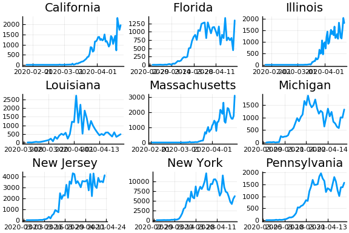
From this we can see that new cases are very noisy. This is especially problematic when cases jump from near 0 to very high values, such as in Illinois. The median value of and variance of new cases, $k_t$, are both $k_{t-1} e^{\gamma(R_t - 1)}$. Only huge changes in $R_t$ can rationalize huge jumps in new cases.
Let’s compute posteriors for each state.
using Interpolations, Distributions
function rtpost(cases, γ, σ, prior0, casepdf)
(rgrid, postgrid, ll) = rtpostgrid(cases)(γ, σ, prior0, casepdf)
w = rgrid[2] - rgrid[1]
T = length(cases)
p = [LinearInterpolation(rgrid, postgrid[:,t]) for t in 1:T]
coverage = 0.9
cr = zeros(T,2)
mu = vec(rgrid' * postgrid*w)
for t in 1:T
l = findfirst(cumsum(postgrid[:,t].*w).>(1-coverage)/2)
h = findlast(cumsum(postgrid[:,t].*w).<(1-(1-coverage)/2))
if !(l === nothing || h === nothing)
cr[t,:] = [rgrid[l], rgrid[h]]
end
end
return(p, mu, cr)
end
function rtpostgrid(cases)
# We'll compute the posterior on these values of R_t
rlo = 0
rhi = 8
steps = 500
rgrid = range(rlo, rhi, length=steps)
Δgrid = range(0.05, 0.95, length=10)
w = rgrid[2] - rgrid[1]
dr = rgrid .- rgrid'
fn=function(γ, σ, prior0, casepdf)
prr = pdf.(Normal(0,σ), dr) # P(r_{t+1} | r_t)
for i in 1:size(prr,1)
prr[i, : ] ./= sum(prr[i,:].*w)
end
postgrid = Matrix{typeof(σ)}(undef,length(rgrid), length(cases)) # P(R_t | k_t, k_{t-1},...)
like = similar(postgrid, length(cases))
for t in 1:length(cases)
if (t==1)
postgrid[:,t] .= prior0.(rgrid)
else
if (cases[t-1]===missing || cases[t]===missing)
pkr = 1 # P(k_t | R_t)
else
λ = max(cases[t-1],1).* exp.(γ .* (rgrid .- 1))
#r = λ*nbp/(1-nbp)
#pkr = pdf.(NegativeBinomial.(r,nbp), cases[t])
pkr = casepdf.(λ, cases[t])
if (all(pkr.==0))
@warn "all pkr=0"
@show t, cases[t], cases[t-1]
pkr .= 1
end
end
postgrid[:,t] = pkr.*(prr*postgrid[:,t-1])
like[t] = sum(postgrid[:,t].*w)
postgrid[:,t] ./= max(like[t], 1e-15)
end
end
ll = try
sum(log.(like))
catch
-710*length(like)
end
return((rgrid, postgrid, ll))
end
return(fn)
end
for σ in [0.1, 0.25, 1]
γ =1/7
nbp = 0.01
figs = []
for gdf in groupby(sdf, :state)
p, m, cr = rtpost(gdf.newcases, γ, σ, x->pdf(truncated(Gamma(4,1),0,8), x),
(λ,x)->pdf(Poisson(λ),x))
f = plot(gdf.date, m, ribbon=(m-cr[:,1], cr[:,2] - m), title=unique(gdf.state)[1], legend=:none, ylabel="Rₜ")
f = hline!(f,[1.0])
figs = vcat(figs, f)
end
l = @layout [a{.1h};grid(1,1)]
display(plot(plot(annotation=(0.5,0.5, "Poisson & σ=$σ"), framestyle = :none),
plot(figs[1:9]..., layout=(3,3)), layout=l))
end
(t, cases[t], cases[t - 1]) = (72, 2052, 215)
(t, cases[t], cases[t - 1]) = (77, 9, 1003)
(t, cases[t], cases[t - 1]) = (78, 2807, 9)
(t, cases[t], cases[t - 1]) = (79, 1, 2807)
(t, cases[t], cases[t - 1]) = (80, 2808, 1)
(t, cases[t], cases[t - 1]) = (55, 352, 2)
(t, cases[t], cases[t - 1]) = (54, -39, 74)
(t, cases[t], cases[t - 1]) = (72, 2052, 215)
(t, cases[t], cases[t - 1]) = (77, 9, 1003)
(t, cases[t], cases[t - 1]) = (78, 2807, 9)
(t, cases[t], cases[t - 1]) = (79, 1, 2807)
(t, cases[t], cases[t - 1]) = (80, 2808, 1)
(t, cases[t], cases[t - 1]) = (55, 352, 2)
(t, cases[t], cases[t - 1]) = (54, -39, 74)
(t, cases[t], cases[t - 1]) = (72, 2052, 215)
(t, cases[t], cases[t - 1]) = (77, 9, 1003)
(t, cases[t], cases[t - 1]) = (78, 2807, 9)
(t, cases[t], cases[t - 1]) = (79, 1, 2807)
(t, cases[t], cases[t - 1]) = (80, 2808, 1)
(t, cases[t], cases[t - 1]) = (55, 352, 2)
(t, cases[t], cases[t - 1]) = (54, -39, 74)


In these results, what is happening is that when new cases fluctuate too much, the likelihood is identically 0, causing the posterior calculation to break down. Increasing the variance of changes in $R_t$, widens the posterior confidence intervals, but does not solve the problem of vanishing likelihoods.
One thing that can “solve” the problem is choosing a distribution of $k_t | \lambda, k_{t-1}$ with higher variance. The negative binomial with parameters $\lambda p/(1-p)$ and $p$ has mean $\lambda$ and variance $\lambda/p$.
γ =1/7
σ = 0.25
Plots.closeall()
for σ in [0.1, 0.25, 0.5]
for nbp in [0.5, 0.1, 0.01]
figs = []
for gdf in groupby(sdf, :state)
p, m, cr = rtpost(gdf.newcases, γ, σ, x->pdf(truncated(Gamma(4,1),0,8), x),
(λ,x)->pdf(NegativeBinomial(λ*nbp/(1-nbp), nbp),x));
f = plot(gdf.date, m, ribbon=(m-cr[:,1], cr[:,2] - m), title=unique(gdf.state)[1], legend=:none, ylabel="Rₜ")
f = hline!(f,[1.0])
figs = vcat(figs, f)
end
l = @layout [a{.1h};grid(1,1)]
display(plot(plot(annotation=(0.5,0.5, "Negative binomial, p=$nbp, & σ=$σ"), framestyle = :none),
plot(figs[1:9]..., layout=(3,3)), layout=l, reuse=false))
end
end
(t, cases[t], cases[t - 1]) = (78, 2807, 9)
(t, cases[t], cases[t - 1]) = (79, 1, 2807)
(t, cases[t], cases[t - 1]) = (80, 2808, 1)
(t, cases[t], cases[t - 1]) = (54, -39, 74)
(t, cases[t], cases[t - 1]) = (54, -39, 74)
(t, cases[t], cases[t - 1]) = (54, -39, 74)
(t, cases[t], cases[t - 1]) = (78, 2807, 9)
(t, cases[t], cases[t - 1]) = (79, 1, 2807)
(t, cases[t], cases[t - 1]) = (80, 2808, 1)
(t, cases[t], cases[t - 1]) = (54, -39, 74)
(t, cases[t], cases[t - 1]) = (54, -39, 74)
(t, cases[t], cases[t - 1]) = (54, -39, 74)
(t, cases[t], cases[t - 1]) = (78, 2807, 9)
(t, cases[t], cases[t - 1]) = (79, 1, 2807)
(t, cases[t], cases[t - 1]) = (80, 2808, 1)
(t, cases[t], cases[t - 1]) = (54, -39, 74)
(t, cases[t], cases[t - 1]) = (54, -39, 74)
(t, cases[t], cases[t - 1]) = (54, -39, 74)
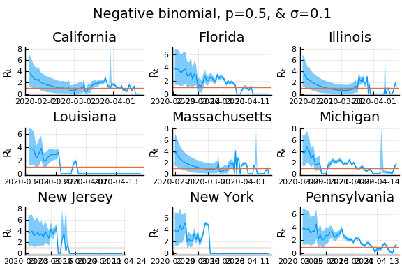 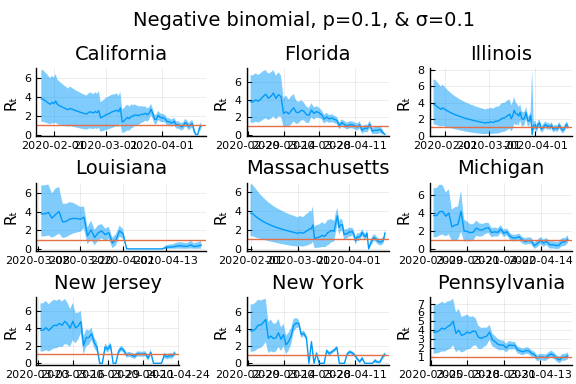 
 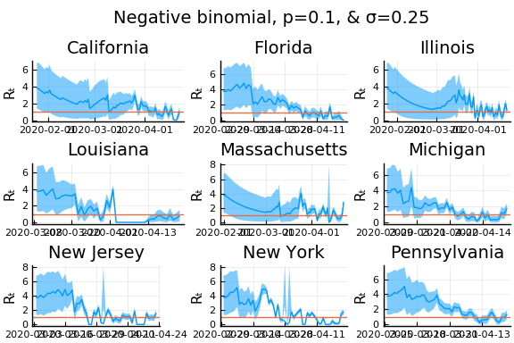
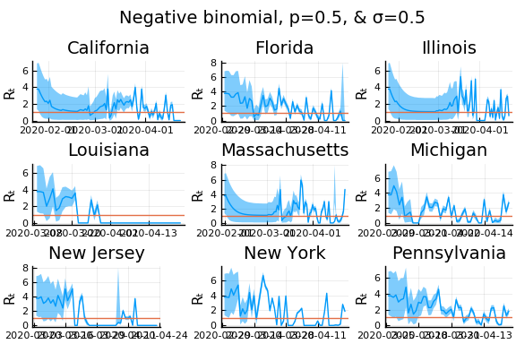
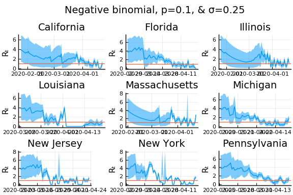
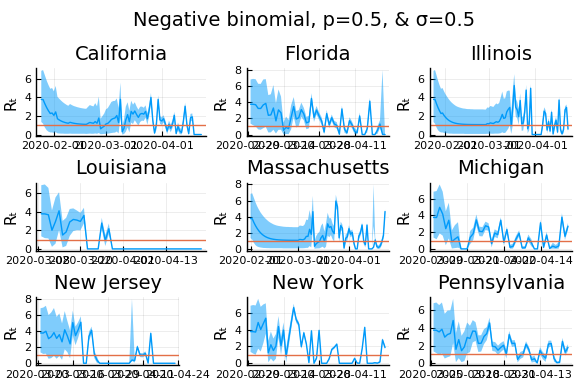 

What Systrom did was smooth the new cases before using the Poisson distribution. He used a window width of $7$ and Gaussian weights with standard deviation $2$.
using RollingFunctions
σ = 0.25
Plots.closeall()
for w in [3, 7, 11]
for s in [0.5, 2, 4]
γ =1/7
nbp = 0.01
figs = []
for gdf in groupby(sdf, :state)
windowsize = w
weights = pdf(Normal(0, s), -floor(windowsize/2):floor(windowsize/2))
weights = weights/sum(weights)
smoothcases = Int.(round.(runmean(gdf.newcases[2:end], windowsize, weights*windowsize)))
p, m, cr = rtpost(smoothcases, γ, σ, x->pdf(truncated(Gamma(4,1),0,8), x),
(λ,x)->pdf(Poisson(λ),x))
f = plot(gdf.date, m, ribbon=(m-cr[:,1], cr[:,2] - m), title=unique(gdf.state)[1], legend=:none, ylabel="Rₜ")
f = hline!(f,[1.0])
figs = vcat(figs, f)
end
l = @layout [a{.1h};grid(1,1)]
display(plot(plot(annotation=(0.5,0.5, "Poisson & σ=$σ, s=$s, w=$w"), framestyle = :none),
plot(figs[1:9]..., layout=(3,3)), layout=l, reuse=false))
end
end
(t, cases[t], cases[t - 1]) = (54, -4, 68)
(t, cases[t], cases[t - 1]) = (56, -4, 68)
(t, cases[t], cases[t - 1]) = (58, -4, 68)

 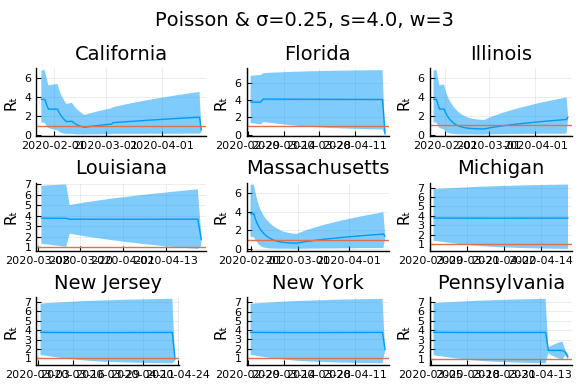
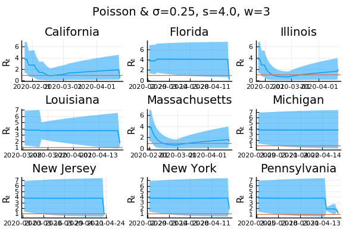
 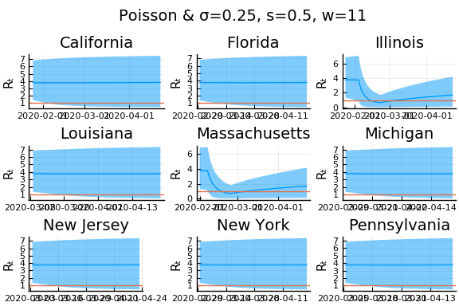
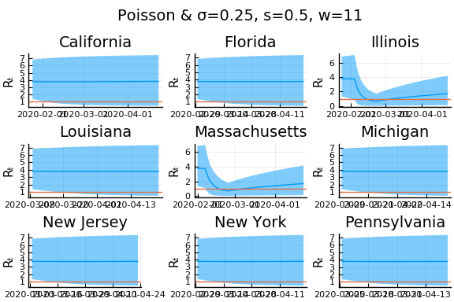 

Here we see that we can get a variety of results depending on the smoothing used. All of these posteriors ignore the uncertainty in the choice of smoothing parameters (and procedure).
An alternative approach¶
Here we follow an approach similar in spirit to Systrom, with a few modifications and additions. The primary modification is that we alter the model of $k_t|k_{t-1}, R_t$ to allow measurement error in both $k_t$ and $k_{t-1}$. We make four additions. First, we utilize data on movement and business operations as auxillary noisy measures of $R_t$. Second, we allow state policies to shift the mean of $R_t$. Third, we combine data from all states to improve precision in each. Fourth, we incorporate testing numbers into the data.
As above, we begin from the approximation
where $k^*$ is the true, unobserved number of new cases. Taking logs and rearranging we have
Let $k_{s,t}$ be the noisy observed value of $k^*_{s,t}$, then
where and $\epsilon_{s,t}$ is measurement error.
With appropriate assumptions on $\epsilon$, $\tau$, $R$ and other observables, we can then use regression to estimate $R$.
As a simple example, let’s assume
- $R_{s,t} = R_{s,0} + \alpha d_{s,t}$ where $d_{s,t}$ are indicators for NPI’s being in place.
- That $\tau_{s,t}$ is constant over time for each $s$
- $E[\epsilon_{s,t} - \epsilon_{s,t-1}|d] = 0$ and $\epsilon_{s,t} - \epsilon_{s,t-1}$ is uncorrelated over time (just to simplify; this is not a good assumption).
```{=html}
``` julia
using GLM
pvars = [Symbol("Stay.at.home..shelter.in.place"),
Symbol("State.of.emergency"),
Symbol("Date.closed.K.12.schools"),
Symbol("Closed.day.cares"),
Symbol("Date.banned.visitors.to.nursing.homes"),
Symbol("Closed.non.essential.businesses"),
Symbol("Closed.restaurants.except.take.out")]
sdf = copy(df)
for p in pvars
sdf[!,p] = by(sdf, :state, (:date, p) => x->(!ismissing(unique(x[p])[1]) .& (x.date .>= unique(x[p])[1]))).x1
end
sdf = sort(sdf, [:state, :date])
sdf[!,:newcases] = by(sdf, :state, newcases = :cases => x->(vcat(missing, diff(x))))[!,:newcases]
sdf[!,:dlogk] = by(sdf, :state, dlogk = :newcases => x->(vcat(missing, diff(log.(max.(x,0.1))))))[!,:dlogk]
fmla = FormulaTerm(Term(:dlogk), Tuple(Term.(vcat(pvars,:state))))
reg = lm(fmla, sdf)
StatsModels.TableRegressionModel{LinearModel{GLM.LmResp{Array{Float64,1}},G
LM.DensePredChol{Float64,LinearAlgebra.Cholesky{Float64,Array{Float64,2}}}}
,Array{Float64,2}}
dlogk ~ 1 + Stay.at.home..shelter.in.place + State.of.emergency + Date.clos
ed.K.12.schools + Closed.day.cares + Date.banned.visitors.to.nursing.homes
+ Closed.non.essential.businesses + Closed.restaurants.except.take.out + st
ate
Coefficients:
───────────────────────────────────────────────────────────────────────────
────────────────────────────────
Estimate Std. Error t value
Pr(>|t|) Lower 95% Upper 95%
───────────────────────────────────────────────────────────────────────────
────────────────────────────────
(Intercept) 0.0529389 0.157586 0.335936
0.7369 -0.256012 0.36189
Stay.at.home..shelter.in.place -0.144314 0.0951249 -1.5171
0.1293 -0.330808 0.0421806
State.of.emergency 0.201502 0.0796784 2.52894
0.0115 0.0452907 0.357713
Date.closed.K.12.schools 0.254984 0.119152 2.13998
0.0324 0.0213836 0.488585
Closed.day.cares 0.0174127 0.105136 0.16562
0.8685 -0.188708 0.223534
Date.banned.visitors.to.nursing.homes -0.0604917 0.0866545 -0.69808
0.4852 -0.23038 0.109396
Closed.non.essential.businesses -0.0964288 0.105492 -0.914083
0.3607 -0.303249 0.110391
Closed.restaurants.except.take.out -0.219336 0.118453 -1.85166
0.0641 -0.451566 0.0128942
state: Alaska -0.0496063 0.22254 -0.222909
0.8236 -0.485901 0.386688
state: Arizona -0.0434971 0.223356 -0.194744
0.8456 -0.48139 0.394396
state: Arkansas -0.0606806 0.220275 -0.275476
0.7830 -0.492535 0.371174
state: California 0.0042871 0.226435 0.018933
0.9849 -0.439644 0.448218
state: Colorado 0.0507533 0.220848 0.229811
0.8182 -0.382222 0.483729
state: Connecticut 0.00916961 0.221573 0.0413841
0.9670 -0.425229 0.443568
state: Delaware 0.00813318 0.220916 0.0368157
0.9706 -0.424977 0.441244
state: District of Columbia -0.0167856 0.222575 -0.0754153
0.9399 -0.453149 0.419578
state: Florida -0.0068121 0.220828 -0.0308479
0.9754 -0.439751 0.426126
state: Georgia -0.0407344 0.221334 -0.184041
0.8540 -0.474663 0.393195
state: Hawaii -0.0572161 0.221972 -0.257763
0.7966 -0.492396 0.377963
state: Idaho -0.0229171 0.222397 -0.103046
0.9179 -0.458931 0.413097
state: Illinois 0.03093 0.220056 0.140555
0.8882 -0.400495 0.462355
state: Indiana 0.0136712 0.223046 0.0612934
0.9511 -0.423615 0.450957
state: Iowa 0.0207514 0.223136 0.0929985
0.9259 -0.416712 0.458214
state: Kansas -0.121475 0.224995 -0.539901
0.5893 -0.562583 0.319632
state: Kentucky -0.0683194 0.220319 -0.310092
0.7565 -0.50026 0.363621
state: Louisiana 0.0425977 0.220898 0.192839
0.8471 -0.390476 0.475672
state: Maine 0.0203375 0.222897 0.0912415
0.9273 -0.416657 0.457331
state: Maryland -0.00766971 0.220194 -0.0348316
0.9722 -0.439364 0.424025
state: Massachusetts 0.0478969 0.217561 0.220154
0.8258 -0.378635 0.474429
state: Michigan 0.0419994 0.217603 0.19301
0.8470 -0.384615 0.468613
state: Minnesota 0.00502801 0.222571 0.0225906
0.9820 -0.431326 0.441382
state: Mississippi -0.022601 0.220944 -0.102293
0.9185 -0.455766 0.410564
state: Missouri -0.0981177 0.22235 -0.441277
0.6590 -0.534038 0.337803
state: Montana -0.0311565 0.220451 -0.141331
0.8876 -0.463355 0.401042
state: Nebraska -0.0617624 0.221138 -0.279293
0.7800 -0.495308 0.371783
state: Nevada -0.0104898 0.22267 -0.0471091
0.9624 -0.447039 0.42606
state: New Hampshire -0.00393095 0.22268 -0.0176529
0.9859 -0.4405 0.432638
state: New Jersey 0.0392051 0.220002 0.178204
0.8586 -0.392113 0.470523
state: New Mexico 0.014529 0.220796 0.0658028
0.9475 -0.418345 0.447403
state: New York 0.0728373 0.221018 0.329554
0.7418 -0.360472 0.506147
state: North Carolina -0.0102477 0.222495 -0.0460582
0.9633 -0.446454 0.425959
state: North Dakota -0.153902 0.220993 -0.696413
0.4862 -0.587163 0.279359
state: Ohio 0.0381581 0.21777 0.175222
0.8609 -0.388784 0.465101
state: Oklahoma -0.0607225 0.221012 -0.274747
0.7835 -0.494021 0.372576
state: Oregon -0.026091 0.220044 -0.118572
0.9056 -0.457491 0.405309
state: Pennsylvania 0.0167631 0.217545 0.0770559
0.9386 -0.409738 0.443264
state: Rhode Island 0.0151375 0.217565 0.0695771
0.9445 -0.411402 0.441677
state: South Carolina -0.00775206 0.220141 -0.035214
0.9719 -0.439343 0.423839
state: South Dakota -0.156007 0.224017 -0.696406
0.4862 -0.595197 0.283183
state: Tennessee -0.095601 0.220076 -0.434399
0.6640 -0.527065 0.335863
state: Texas 0.0185814 0.220315 0.0843402
0.9328 -0.41335 0.450512
state: Utah -0.0940672 0.222549 -0.422681
0.6725 -0.530378 0.342244
state: Vermont -0.0154339 0.217535 -0.0709487
0.9434 -0.441916 0.411049
state: Virginia -0.0430704 0.223231 -0.192941
0.8470 -0.480719 0.394578
state: Washington 0.0141374 0.220979 0.0639764
0.9490 -0.419096 0.447371
state: West Virginia -0.0116897 0.21989 -0.0531618
0.9576 -0.442787 0.419408
state: Wisconsin 0.00795341 0.222729 0.0357089
0.9715 -0.428711 0.444618
state: Wyoming -0.104069 0.220599 -0.471758
0.6371 -0.536557 0.328419
───────────────────────────────────────────────────────────────────────────
────────────────────────────────
From this we get that if we assume $\gamma = 1/7$, then the the baseline estimate of $R$ in Illinois is $7(0.053 + 0.03) + 1\approx 1.58$ with a stay at home order, $R$ in Illinois becomes $7(0.053 + 0.03 - 0.14) + 1 \approx 0.6$.
Bettencourt, Ruy M., Luís M. A. AND Ribeiro. 2008. “Real Time Bayesian Estimation of the Epidemic Potential of Emerging Infectious Diseases.” PLOS ONE 3 (5): 1–9. https://doi.org/10.1371/journal.pone.0002185.